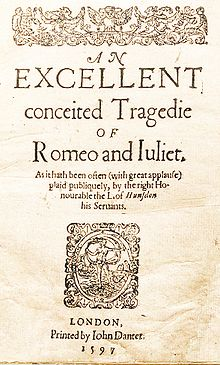
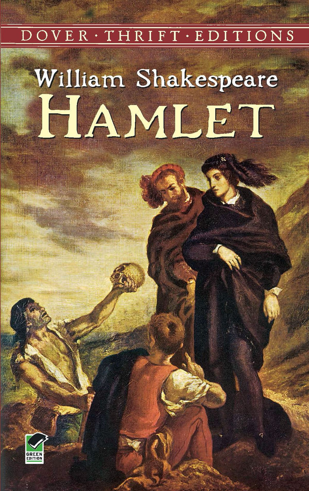

Karya Terpopuler
Romeo & juliet
Kisah legendaris ini berawal dari permusuhan antara dua keluarga yaitu keluarga Capulet dan keluarga Montague. Romeo berasal dari keluarga Montague dan Juliet berasal dari keluarga Capulet. Tidak banyak yang tahu, bahwa sebenarnya sebelum bertemu dengan Juliet, wanita yang dicintai Romeo adalah Rosaline.
Macbeth

KBercerita tentang seorang jenderal bernama Macbeth yang pada waktu itu ada di bawah kekuasaan Raja Skotlandia yaitu Duncan I. Suatu hari, dia bertemu dengan tiga orang peramal yang mengatakan bahwa dia akan menjadi seorang raja.
Hamlet
Bercerita tentang seorang raja yang meninggal dengan misterius yang kemudian digantikan oleh claudius, yaitu paman hamlet. Claudius juga menikahi ibu Hamlet dan membuat hamlet sakit hati. Suatu malam, arwah sang raja menghantui istana kerajaan. Ia ingin anaknya, Hamlet, untuk membalas dendam karena ayah hamlet dibunuh oleh claudius. Pangeran Hamlet yang berjiwa sensitif bersumpah untuk membalas dendam dengan segala cara yang akhirnya harus dibayar dengan mahal.
Julius Ceasar

Julius Caesar adalah sandiwara tragedi karya William Shakespeare yang menggambarkan konspirasi terhadap Julius Caesar, pembunuhannya, dan kejadian setelahnya. Sandiwara ini adalah salah satu dari beberapa sandiwara Romawi yang ia tulis, termasuk di antaranya Coriolanus dan Antonius dan Cleopatra.
Othello

Othello adalah tragedi lima babak karya dramawan besar Inggris William Shakespeare. Judul lengkapnya adalah Othello, the Moor of Venice. Othello adalah salah satu karya tragedi terbesar Shakespeare, disamping Macbeth, King Lear, dan Hamlet. Shakespeare menulis Othello antara tahun 1602 dan 1604. Othello pertama kali dilakonkan pada tahun 1604 di Whitehall, London, di hadapan Raja James I. Buku Othello diterbitkan pada tahun 1622 dan versi revisinya muncul pada tahun 1623.
King Lear

Lahir pada tanggal 26 April 1564
King Lear merupakan salah satu drama Inggris karya William Shakespeare yang dijadikan objek penelitian ini. Bahasa yang digunakan dalam drama “King Lear” sederhana dan mudah dimengerti oleh kita. Dengan membaca drama “King Lear”, kita bisa belajar bagaimana memahami cinta, bagaimana mencintai dan dicintai, dan bagaimana menyadari nilai kesetiaan.